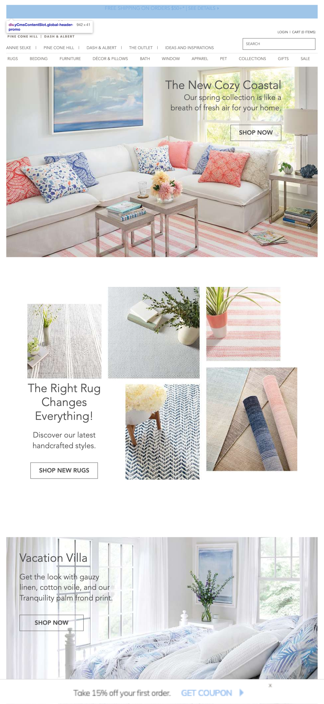
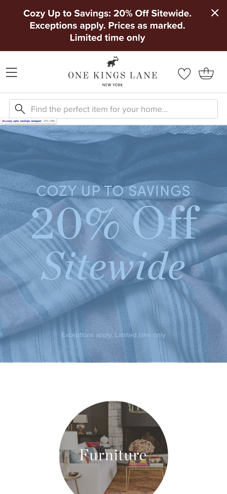

Repetition
Target
Target WebsiteTarget repeats the colors yellow, gray and white to create a feeling of coherence among the images. By going across the top and using the rule of thirds on the bottom, the designer creates a feeling of balance. Target also really uses alignment well here. The line where the yellow and gray meet at the bottom lines up with the jumping man's feet and knees. The text at the bottom aligns with the images above on the left border. This repetition of elements gives this page a dynamic, and energetic feel.
White Space
Annie Selke
Annie Selke Website In contrast to Target, where the design takes up all negative space, Annie Selke's design leave a small border around the entire body. While Target's images are right up against each other, Annie Selke leaves a small amount of space around each image. This is a very clean and minimal design. There is not even much color text or background. Even the colors in the images are soft, muted and similar. The feel of this page, is calm and relaxed. The amount of white space on this page is pleasing to the eye and has much more relaxed feel than Target's.
Hierarchy
One Kings Lane
One Kings Lane Website One Kings Lane uses hierarchy to draw attention to one thing. They are having a sale! We know this because the text with this information is larger than anything on the page. Quite often, for branding, a company will want to bring attention to their logo. In this example, the logo is not pullilng attention by either size or color. We see the top band of color is also advertising the sale and vying for attention. Even the 20 percent is thicker and has more weight in addition to its size to compete for attention. This makes it clear that the most important information the advertiser wants us to have is there is a sale at 20% off.